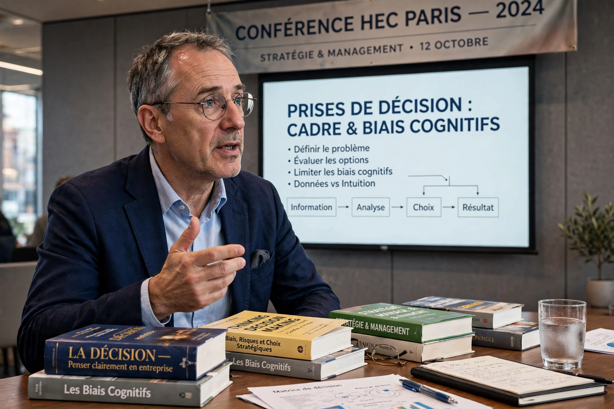

From Wikipedia, the free encyclopedia
| Olivier Sibony | |
|---|---|
 | |
| Nationality | French |
| Occupation | Professor, author, consultant |
| Employer | HEC Paris |
| Known for | Work on decision-making, "noise" in judgment |
| Notable work | You're About to Make a Terrible Mistake (2019); Noise (2021) |
Olivier Sibony is a French professor of strategy and decision science, author, and former management consultant. He is a professor at HEC Paris and an associate fellow at Oxford University's Saïd Business School. Sibony spent about 25 years at McKinsey & Company, where he was a director (senior partner) and advised business leaders on strategy and decision-making.
Sibony graduated from HEC Paris and later earned a doctorate at Université Paris-Dauphine. At McKinsey he led the firm's work on strategic decision making and served clients mainly in the consumer, retail, and luxury sectors, frequently on questions of corporate strategy and M&A. After leaving McKinsey he joined the faculty of HEC Paris, where he teaches courses on decision-making in the MBA and executive programs.
Sibony's research examines how organizations can make better decisions by improving their decision processes rather than relying on individual intuition. He catalogs cognitive biases that distort business judgment — such as pattern-recognition errors, action-oriented bias, and excessive optimism — and proposes "decision hygiene" practices, including checklists and structured interviews, to counteract them.
With Nobel laureate Daniel Kahneman and Cass Sunstein, Sibony co-authored Noise: A Flaw in Human Judgment (2021), which argues that unwanted variability ("noise") in professional judgments — by judges, doctors, underwriters, and forecasters — is as costly as bias, and often larger in magnitude.